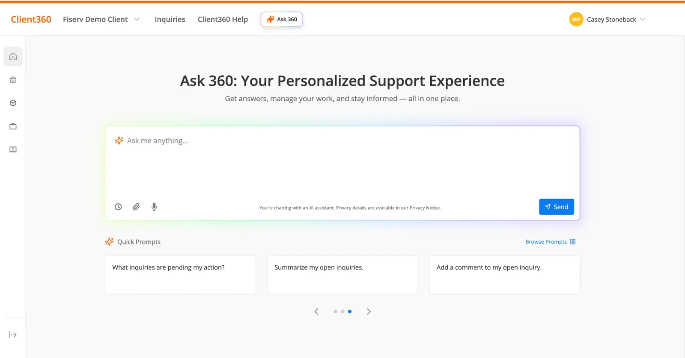

Redesigning how financial-institution clients get service, from the interviews that mapped the problem to an AI assistant built into the portal.
01
Fiserv's client support portal is where financial-institution clients go when something isn't working, and getting to an answer was the problem. Ask 360 is the redesign: describe the problem in your own words, get documentation back for the products you actually license, and open an inquiry from inside the same conversation only if you still need one.

02
Primary designer. I ran the interviews that defined the problem, designed the experience through successive rounds, and built the working prototype with Figma Make and GitHub Copilot. I also wrote the requirements and acceptance criteria engineering and the knowledge-platform team built against.
03
I interviewed clients about how they got help today: what they searched for, where they gave up, and what they did next. Three things came back consistently.
That reframed the problem as the whole service journey, not a missing chatbot.
I ran sessions with 10 client users, playing the assistant myself behind the prototype so people could work through real problems before any model behaviour existed. Where someone got stuck, or expected something the assistant never offered, I changed the flows and copy between sessions.
Recurring sessions with clients on how they're actually using it. Each round feeds the next set of functionality.
04
A chat widget in the corner would have left the broken journey intact underneath it, so the assistant is native to the portal instead: describe the problem, troubleshoot with what comes back, open an inquiry from the same conversation with the context already attached. I worked in rounds, building each version into a clickable prototype so it could be judged as an experience rather than a static screen.
We partnered with Sierra and gave the assistant the client's details, so it troubleshoots instead of returning generic documentation. It answers against the products a client licenses and the state of their account, and it reads each user's permissions: it won't offer to open an inquiry for someone with no rights to create one, or reference an invoice they can't see.
Clients open the portal from a desk and from a phone between meetings, so the chat panel, the returned articles and the inquiry form all reflow across desktop, tablet and mobile.
I documented 40+ conversational use cases and their edge cases with acceptance criteria: what happens when the assistant doesn't have enough data, when a question is out of scope, and when documentation can't resolve it and an inquiry is the right next step.
05
Several groups had to agree on the same constraints: Sierra on what the assistant should do and with which client data, engineering on what was buildable, the knowledge-platform team on which content gaps to fill, and the owners of account and permissions data on exactly what could be exposed and to whom. Re-aligning that every time a feedback session surfaced something new was most of the day-to-day work.
06
Pilot results are still pending. The feedback so far points one way on the core case: for a client already trying to solve something themselves, the assistant is powerful, because troubleshooting is exactly what it is good at.
Two cases came back consistently.
In both, chat adds a step rather than removing one, which is the opposite of what the redesign set out to do. That is the problem I am working on now: keep the conversational path for the people it genuinely helps, and get out of the way for the people it doesn't.
07
The prototype I designed and built: landing dashboard, AI chat, recommended resolution, related knowledge articles, and creating an inquiry with the conversation context carried over.